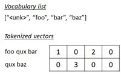
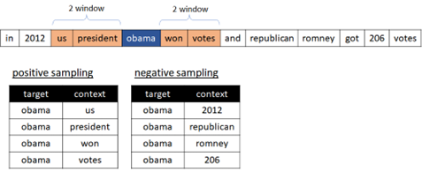
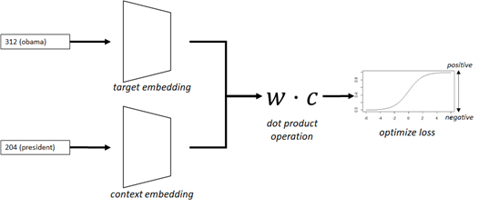

Word2Vec algorithm (Negative Sampling Example)#
Earlier we have built our own embedding in simple sentiment detection. This trained embedding will then capture the tone of sentiment in words, but it won’t capture other properties, such as, the similarity of “dog” and “puppy”.
More advanced language models will capture a lot of language properties and these models are useful in practical use-case - such as, searching similar text, clustering document, recommendation, etc.
Suppose, we need the model which predicts the next word.
In building this model, when it has 70,000 words and 3,000,000 records in training set, it will need 70,000 * 3,000,000 float values in one-hot vectors.
As you can easily find, this model will be computationally expensive(because it needs the probability over all target words) and will then consume a lot of computing resources (memory and disk space) depending on vocabulary size.
👉 In order for making it scalable to unlimited vocabularies, the algorithm can be modified by sampling k incorrect words and training the part of words, instead of computing possibilities for all words.
This method is called Negative Sampling (NS).
In Word2Vec family, you can take another optimization objectives, called Hierarchical Softmax, instead of Negative Sampling (NS).
Today’s refined embedding algorithms - such as, Word2Vec or GloVe - includes this idea of Negative Sampling method.
👉 The well-trained dense vector will represent some aspects (meaning) for words or documents. For instance, if “dog” and “cat” are closely related each other, the dense vectors for “dog” and “cat” might have close cosine similarity. In this representation, “burger” and “hot-dogs” might be closer than “ice-cream”. (This is called distributional hypothesis.)
More sophisticated vectors might have analogies for words - such as, “king” - “man” + “woman” = “queen”.
👉 Word2Vec algorithm is based on the distributional hypothesis, which derives from word similarities by representing target words according to the contexts in which they occur.
In this example, I’ll introduce Word2Vec model in neural networks with Negative Sampling (NS) method.
When the target word (focus word) is given, first we’ll pick up by sampling both correct and incorrect context words.
For each collected context words, we will then compute the difference between correct word’s score and incorrect word’s score.
Finally we then optimize the loss of scores to train Word2Vec model.
This approach is called Skip-Gram (SG) model in Word2Vec algorithms.
Install required packages#
!pip install torch==2.3.0 torchtext==0.18.0 --extra-index-url https://download.pytorch.org/whl/cu114
!pip install pandas numpy gensim
Prepare data#
In this example, I have used short description text in news papers, since it’s formal-styled concise sentence. (It’s today’s modern English, not including slangs.)
Before starting, please download News_Category_Dataset_v3.json (collected by HuffPost) in Kaggle.
import pandas as pd
df = pd.read_json("News_Category_Dataset_v3.json",lines=True)
text_col = df["short_description"]
text_col
0 She left her husband. He killed their children...
1 Of course it has a song.
2 The actor and his longtime girlfriend Anna Ebe...
3 The actor gives Dems an ass-kicking for not fi...
4 The "Dietland" actress said using the bags is ...
...
200848 Verizon Wireless and AT&T are already promotin...
200849 Afterward, Azarenka, more effusive with the pr...
200850 Leading up to Super Bowl XLVI, the most talked...
200851 CORRECTION: An earlier version of this story i...
200852 The five-time all-star center tore into his te...
Name: short_description, Length: 200853, dtype: object
Next we standarize the input text as follows.
Make all words to lowercase in order to reduce words
Make “-” (hyphen) to space
Remove all punctuation
👉 Note : Here we have not removed stop words - such as, “the”, “a”, etc -, because these words will be omitted (dropped) by the following subsampling process.
👉 Note : In practice, N-gram words (such as, “New York”, “Barack Obama”) should also be dealed with,
👉 In the strict pre-processing, we should also care about the polysemy. (The different meanings in the same word should have different tokens.)
text_col = text_col.str.lower()
text_col = text_col.str.replace("-"," ")
text_col = text_col.str.replace("[^'\&\w\s]","",regex=True)
text_col = text_col.str.strip()
text_col
0 she left her husband he killed their children ...
1 of course it has a song
2 the actor and his longtime girlfriend anna ebe...
3 the actor gives dems an ass kicking for not fi...
4 the dietland actress said using the bags is a ...
...
200848 verizon wireless and at&t are already promotin...
200849 afterward azarenka more effusive with the pres...
200850 leading up to super bowl xlvi the most talked ...
200851 correction an earlier version of this story in...
200852 the five time all star center tore into his te...
Name: short_description, Length: 200853, dtype: object
In order to create a word’s index vector as follows, we create a list for words (vocab) used in the training set.
The generated list stoi converts word to index, and itos converts index to word.

from torchtext.data.utils import get_tokenizer
from torchtext.vocab import build_vocab_from_iterator
# create tokenizer
tokenizer = get_tokenizer("basic_english")
# define tokenization function
def yield_tokens(data_iter):
for text in data_iter:
yield tokenizer(text)
# build vocabulary list
vocab = build_vocab_from_iterator(
yield_tokens(text_col),
specials=["<unk>"],
)
vocab.set_default_index(vocab["<unk>"])
# get list for index-to-word, and word-to-index
itos = vocab.get_itos()
stoi = vocab.get_stoi()
# show the number of words
vocab_size = vocab.__len__()
vocab_size
77081
# test
print(vocab(["obama", "was", "president"]))
print(stoi["obama"])
print(itos[318])
[318, 24, 116]
318
obama
Finally we build target and positive context pairs for Skip-Gram (SG) training inputs.
For instance, suppose, we want to find context words for the target word “obama” in the following sentence with window size 2.
"in 2012 us president obama won votes and republican romney got 206 votes"
In this example, the word “us”, “president”, or “won” are positive context words for the target word “obama”, but “2021”, “republican”, or “romney” are negative context words for the target word “obama”.

Here we build pairs only for positive contexts. (The negative sampling will be performed in batch processing later.)
💡 Note : In this example, we pick up context words evenly, regardless of window position. For instance, the context words “us” and “president” has same weight against target word “obama” in above example.
In Word2Vec, you can take another variation with positional context.
window_size = 4
train_pairs, train_labels = [], []
for text in text_col:
tokens = tokenizer(text)
for i, t in enumerate(tokens):
window_start = max(0, i - window_size)
window_end = min(len(tokens) - 1, i + window_size)
for j in range(window_start, window_end + 1):
if j != i:
train_pairs.append([stoi[t], stoi[tokens[j]]])
train_labels.append(1.0)
print("number of all positive pairs : {}".format(len(train_pairs)))
print("***** fisrt 10 pairs *****")
print(train_pairs[:10])
number of all positive pairs : 29596892
***** fisrt 10 pairs *****
[[68, 373], [68, 61], [68, 502], [68, 47], [373, 68], [373, 61], [373, 502], [373, 47], [373, 683], [61, 68]]
Subsampling#
The training set will have a bias by word’s frequency.
For instance, the stop words (e.g., “in”, “the”, and “a”) will have less meaning in contexts, and the word “one”, “new”, or “make” will also be frequently used in corpus, but it then won’t be much useful information.
In original paper (Mikolov et al., 2013), Word2Vec implements subsampling to address this problem.
The paper says that each word \(w_i\) in the training set is discarded (dropped) with probability computed by the formula :
where \(t\) is some threshold and \( f(w_i) \) is frequency ratio.
As you can see, the words which has high frequency are likely to be discarded.
The threshold is a parameter which determines how rarely discarded. (We use \(10^{-5}\) along with this paper.)
In order to implement subsampling function, first we build a dictionary for token index and frequency ratio. (These values are normalized and sum up to 1.0.)
from torchtext.data.utils import get_tokenizer
from collections import Counter
# create bag of token's indices (multiple tokens duplicated)
def tokenize_all(col_text):
for text in col_text:
tokens = tokenizer(text)
for t in tokens:
yield stoi[t]
all_token_indices = [i for i in tokenize_all(text_col)]
# create statistics for all indices
stat = Counter(all_token_indices)
# build dictionary for frequency ratio
ratio_dic = {index: count/len(all_token_indices) for index, count in stat.items()}
dtoi = list(ratio_dic)
ratio_dic
By using this dictionary, we now build a function which determines whether it’s discarded.
import numpy as np
# When one of index_list's elements is discarded, it will become True.
# Otherwise, False.
def is_discarded(index_list, random_val, threshold=1e-5):
bool_list = [random_val < 1 - np.sqrt(threshold/ratio_dic[i]) for i in index_list]
return any(bool_list)
Negative sampling (NS)#
Now it’s time to implement negative sampling (NS).
The negative samples are selected using unigram distribution, in which more frequent token will be more likely selected.
However, the original paper says that the unigram distribution raised to the 3/4rd power (see below) will outperform rather than original distribution. :
In this example, we also pick up negative samples by this distribution.
First we build the list of above distribution as follows.
unigram_dist = np.array(list(ratio_dic.values()))
ns_dist = unigram_dist**0.75 / np.sum(unigram_dist**0.75)
ns_dist
array([1.02016515e-03, 2.63017814e-04, 1.22094381e-03, ...,
1.33448163e-06, 1.33448163e-06, 1.33448163e-06])
Now we implement a function to get negative samples.
This function picks up samples with above distribution and returns the list of token indices.
import torch
def get_negative_samples(positive_samples, ns_ratio=1.0):
"""
Args:
positive_samples (2d list): batch set of positive sample pairs
ns_ratio (float): the ratio of negative samples
0.0 : no negative samples
1.0 : same number as positive samples
Return:
list of negative sample pairs (2d list)
"""
# generate the list of token index for negative samples
batch_size = len(positive_samples)
num_negative_samples = int(batch_size * ns_ratio)
dic_idx_tensor = torch.multinomial(
torch.tensor(ns_dist, dtype=torch.float),
num_negative_samples,
replacement=True
)
ns_tokens = [dtoi[d] for d in dic_idx_tensor.tolist()]
# build negative sample pairs
target_tokens = [p[0] for p in positive_samples]
negative_pairs = []
for i in range(batch_size):
negative_pairs.append([target_tokens[i], ns_tokens[i]])
return negative_pairs
# test
pos_test = np.reshape(np.arange(1,7), (3, 2))
print("***** positive samples *****")
print(pos_test)
neg_test = get_negative_samples(pos_test)
print("***** negative samples *****")
print(neg_test)
***** positive samples *****
[[1 2]
[3 4]
[5 6]]
***** negative samples *****
[[1, 1192], [3, 376], [5, 44]]
Build data collator#
Now we build pre-processing (i.e, data collator) in each batch.
In this data collator, we pre-process data as follows :
Pick up positive samples and labels.
Discard samples with above subsampling function.
Add negative samples with above negative sampling function.
import random
from torch.utils.data import DataLoader
device = torch.device("cuda" if torch.cuda.is_available() else "cpu")
def collate_batch(batch):
new_label, new_pair = [], []
rand_val = random.random()
# perform subsampling
for (label, pair) in batch:
if is_discarded(pair, rand_val):
continue
new_label.append(label)
new_pair.append(pair)
if len(new_label) == 0:
empty = torch.tensor([], dtype=torch.int64).to(device)
return empty, empty
# add negative samples
negative_samples = get_negative_samples(new_pair)
for ns in negative_samples:
new_label.append(0.0)
new_pair.append(ns)
# shuffle (with same seed)
seed = random.randint(0, 10e6)
random.seed(seed)
random.shuffle(new_label)
random.seed(seed)
random.shuffle(new_pair)
# convert to tensor
new_label = torch.tensor(new_label, dtype=torch.float).to(device)
new_pair = torch.tensor(new_pair, dtype=torch.int64).to(device)
return new_label, new_pair
dataloader = DataLoader(
list(zip(train_labels, train_pairs)),
batch_size=1024,
shuffle=True,
collate_fn=collate_batch
)
# test
for labels, pairs in dataloader:
break
print("label shape in batch : {}".format(labels.size()))
print("token shape in batch : {}".format(pairs.size()))
print("***** label sample *****")
print(labels[0])
print("***** pair sample *****")
print(pairs[0])
label shape in batch : torch.Size([108])
token shape in batch : torch.Size([108, 2])
***** label sample *****
tensor(0., device='cuda:0')
***** pair sample *****
tensor([2566, 112], device='cuda:0')
Build network and Train#
Now let’s build Word2Vec (with Skip-Gram method) network and train.
In this network, we generate dense vectors for both target and context words by embedding (see exercise02), and perform dot product operation as follows.
Here I don’t go so far, but in traditional NLP, the matrix for word-context pairs (so called, PMI matrix) is considered and the dimension can be reduced with factorization by SVD (Singular Value Decomposition) in order for preventing from high computational costs and sparsity. (It’s based on the idea of PMI, point-wise mutual information.)
In this Word2Vec model (neural methods), however, this PMI-based idea can be simply achieved by dot product operation between word’s embedding vector and context’s embedding vector, based on the sampling of word’s frequency.
We will then evaluate the loss by sigmoid :
where \(\mathbf{w}\) is target word (focus word) and \(\mathbf{c}_i\) is its corresponding context words
(See here for details about sigmoid operation.)
Now I illustrate our network in the following picture.

Note : In Word2Vec family, you can also take another context representation, \(\frac{1}{1 + e^{-\sum \mathbf{w}\cdot\mathbf{c}_i}}\). This is called CBOW approach, instead of Skip-Gram (SG) approach.
In this model, only embedding is trained and it will then eventually give you a well-trained embedding for word vectorization. This is why this model (Word2Vec) is widely used for getting model for word vectorization.
In the following example, sigmoid is operated in torch.nn.BCEWithLogitsLoss and I don’t then include sigmoid operation in model class.
import torch.nn as nn
embedding_dim = 128
class Word2Vec(nn.Module):
def __init__(self, vocab_size, embedding_dim):
super().__init__()
self.embedding_target = nn.Embedding(vocab_size, embedding_dim)
self.embedding_context = nn.Embedding(vocab_size, embedding_dim)
def forward(self, inputs):
emb_tar = self.embedding_target(inputs[:,0])
emb_con = self.embedding_context(inputs[:,1])
dot_prd = (emb_tar * emb_con).sum(dim=-1)
return dot_prd
model = Word2Vec(vocab_size, embedding_dim).to(device)
num_epochs = 20
optimizer = torch.optim.AdamW(model.parameters(), lr=0.001)
criterion = nn.BCEWithLogitsLoss()
for epoch in range(num_epochs):
for labels, pairs in dataloader:
if pairs.nelement() == 0:
continue
# optimize
optimizer.zero_grad()
outs = model(pairs)
loss = criterion(outs, labels)
loss.backward()
optimizer.step()
print("Epoch {} - loss: {:2.4f}".format(epoch+1, loss.item()), end="\r")
print("")
Epoch 1 - loss: 1.4364
Epoch 2 - loss: 0.9896
Epoch 3 - loss: 0.2934
Epoch 4 - loss: 0.6281
Epoch 5 - loss: 0.4952
Epoch 6 - loss: 0.5789
Epoch 7 - loss: 0.6157
Epoch 8 - loss: 0.4032
Epoch 9 - loss: 0.8901
Epoch 10 - loss: 0.7420
Epoch 11 - loss: 0.5190
Epoch 12 - loss: 0.4272
Epoch 13 - loss: 0.3402
Epoch 14 - loss: 0.3383
Epoch 15 - loss: 0.4935
Epoch 16 - loss: 0.4414
Epoch 17 - loss: 0.3320
Epoch 18 - loss: 0.3234
Epoch 19 - loss: 0.2709
Epoch 20 - loss: 0.2871
Get similar vectors#
We get top 10 words which has close cosine similarity with the word “obama” (who is a former president) in the generated target vectors.
Note that here we have used a limited number of articles in news paper and repeatedly trained with this same dataset. (Here we have trained with 20 epochs.) However, you can train using more large corpus (unlabeled dataset) in this unsupervised way (such as, using Wikipedia) to get more generalized vectors.
It will also include a lot of contrasting conjunctions (antonyms), such as, “democratic” and “republican”, “obama” and “trump”, and so on, rather than contexts with close relationship (synonyms).
from collections import OrderedDict
import numpy as np
from numpy.linalg import norm
# get embedding vector for the word "obama"
target_index = torch.tensor(stoi["obama"], dtype=torch.int64).to(device)
target_emb = model.embedding_target(target_index).cpu().detach().numpy()
# get vectors for all words (top frequent 20000 words)
sorted_tuples = sorted(ratio_dic.items(), key=lambda x: x[1], reverse=True)
sorted_tuples = sorted_tuples[:20000] # reduce samples
sorted_dict = OrderedDict(sorted_tuples)
index_all = torch.tensor(list(sorted_dict.keys()), dtype=torch.int64).to(device)
all_target_emb = model.embedding_target(index_all).cpu().detach().numpy()
# get L2 distance for all words
all_distance = np.array([np.dot(target_emb,v)/(norm(target_emb)*norm(v)) for v in all_target_emb])
# get top 10 words similar to the word "obama"
indices_list = np.argsort(-all_distance)
token_indices_list = [index_all[i].item() for i in indices_list]
[itos[i] for i in token_indices_list[:10]]
['obama',
'president',
'barack',
'trump',
'donald',
'administration',
'nominee',
'secretary',
'senate',
'erdogan']
Pre-trained model#
In above example, I have implemented Word2Vec and Negative Sampling (NS) algorithm from scratch, but you can use the efficient implementations for Word2vec algorithm in gensim package.
Pre-trained word vectors for English (which are well-trained by large corpora) is also available, such as, in Google (Word2Vec) or Stanford (GloVe), and pre-trained word vectors for other languages are also available in Polyglot project.
Note : When you use these off-the-shelf embeddings, it’s better to apply the same standarization scheme (the normalization scheme used in the training) in pre-processing.
In this example, I load the model trained with news dataset by Google, in which the vector has 300 dimension.
import gensim.downloader
trained_model = gensim.downloader.load("word2vec-google-news-300")
trained_model["dog"].shape
(300,)
Show top 10 similar words to the word “dog”.
trained_model.most_similar("dog", topn=10)
[('dogs', 0.8680489659309387),
('puppy', 0.8106428384780884),
('pit_bull', 0.780396044254303),
('pooch', 0.7627376914024353),
('cat', 0.7609457969665527),
('golden_retriever', 0.7500901818275452),
('German_shepherd', 0.7465174198150635),
('Rottweiler', 0.7437615394592285),
('beagle', 0.7418621778488159),
('pup', 0.740691065788269)]
Show most similar word to the semantic of “king” - “man” + “woman”.
trained_model.most_similar(positive=["king", "woman"], negative=["man"])[0]
('queen', 0.7118193507194519)